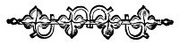
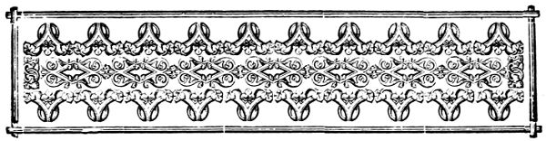
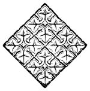
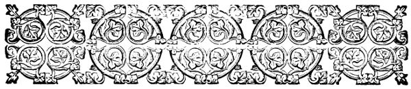
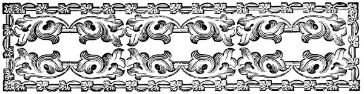
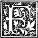

XI .
NEW PLANS .
 T
HINGS went very smoothly and pleasantly after this for several weeks .
Maggie finished the whole number of towels , and she had taken so much pains , and they were so well done for a little girl of seven , that mamma said she thought she must give her six cents apiece instead of five .
Bessie 's small patient fingers were learning to do nicely , too , and Mrs. Bradford said she should soon have two neat young seamstresses .
There were now more than four dollars in the box .
They had each had one new pair of gloves bought for them , and it was not likely , if these were not lost , that more would be wanted before New Year .
Maggie had improved surprisingly in
the matter of boot-laces , and now did not wear them out much faster than Bessie , who did not put on her own shoes .
Growing daily more careful in this one thing , she became so in others .
Fewer buttons and strings were dragged from her clothes , her aprons and dresses were not so soon soiled , and her hat , instead of being tossed down in any spot where she happened to be when she took it off , was always carried to the nursery and given to Jane , that she might put it away .
T
HINGS went very smoothly and pleasantly after this for several weeks .
Maggie finished the whole number of towels , and she had taken so much pains , and they were so well done for a little girl of seven , that mamma said she thought she must give her six cents apiece instead of five .
Bessie 's small patient fingers were learning to do nicely , too , and Mrs. Bradford said she should soon have two neat young seamstresses .
There were now more than four dollars in the box .
They had each had one new pair of gloves bought for them , and it was not likely , if these were not lost , that more would be wanted before New Year .
Maggie had improved surprisingly in
the matter of boot-laces , and now did not wear them out much faster than Bessie , who did not put on her own shoes .
Growing daily more careful in this one thing , she became so in others .
Fewer buttons and strings were dragged from her clothes , her aprons and dresses were not so soon soiled , and her hat , instead of being tossed down in any spot where she happened to be when she took it off , was always carried to the nursery and given to Jane , that she might put it away .
Quite often the children had small presents of money .
Grandmamma Duncan or Uncle John , papa or grandpapa , would give them a new five or ten cent piece , -- once Uncle John had given them each twenty-five , -- but they never spent it for their own pleasure .
As soon as they received any such little gift , away they ran for the library-box , and popped the money in .
One day Maggie found ten
cents in the street , and came rushing in to her mother 's room with it .
`` See here , mamma , '' she said , `` what I have found !
It was lying right down by our stoop , and there was no one near it , and I do n't know whose it is . ''
`` Well , if you do not find the owner , we may think you have a right to it , I suppose , '' said Mrs. Bradford .
`` But , mamma , ought we not to put it in the paper first , and see if any one comes for it ? ''
`` No , dear , that would not be worth while for such a small sum . ''
`` But , mamma , when papa found that pocket-book with money in it , he put a piece in the paper , so the person who lost it would know where it was . ''
`` There were more than a hundred dollars in that pocket-book , Maggie .
It was only
right that papa should let the owner know where it was to be found .
But ten cents is a very small sum , and if he put half a dozen advertisements in the paper , it is not at all likely that any person would come for it . ''
`` And no one came for the money in the pocket-book , '' said Maggie , `` though papa kept it a great while .
But , mamma , he said it did not belong to him ; and since he could find no owner , he should think it belonged to the Lord .
So he gave it to the Sunday-school .
Well now , if I do not know who lost this ten cents , do you not think it belongs to the Lord , and I ought to return it to him ? ''
`` Perhaps you ought , my darling , '' said Mrs. Bradford , well pleased to find her little girl so strictly honest , and so unwilling to keep that which she could not quite surely feel was her own .
`` Suppose you put it with your library money ? ''
`` Would that be quite fair , mamma ?
Would it be giving to the Lord that which belonged to him to put it with that money which we are to earn ? ''
`` Quite fair and right , I think , dearest .
That money you have certainly devoted to the Lord 's work ; and you may put this with it with a clear conscience . ''
So the ten cents were added to the sum in the box , which , in one way and another , was fast growing to the desired amount .
Each Sunday Maggie and Bessie went over to the hotel to Mrs. Rush 's class .
Not one had they missed , for they counted so much upon it that their mother could not bear to keep them at home , even in bad weather .
Two or three Sabbaths had been very rainy , but papa had wrapped Bessie in mamma 's water-proof cloak , and carried her over to the hotel , while Maggie , in her own cloak and
high india-rubber boots , trotted along by his side holding the large parasol , which made a capital umbrella for the small figure beneath it .
Two bright little faces they were which peeped forth from the hoods of these water-proofs when they appeared in Mrs. Rush 's parlor , and dearly did she and the colonel love to see them .
Then the wrappings were pulled off , and there were the two darlings as warm and dry as if they had never stirred from their own nursery fire .
Mrs. Rush still did all the teaching herself , but since that first Sunday , she had quite given up the office of story-teller to her husband .
She never could invent such stories as he did , she said , and since he had begun with it , he had better go on !
So each Sunday he had one ready for them , and when the lessons were over , teacher and scholars were alike eager to listen .
He had to repeat `` Benito ''
more than once , so fond were they all of it , and the children , especially Bessie , would stop him if he told it in any way different from that in which they had first heard it , and tell him he was wrong .
They remembered it , he said , better than he did .
Maggie and Bessie were very busy just now .
Christmas was drawing near , and they were each working a book-mark which were to be presented to Colonel and Mrs. Rush .
Bessie 's was for `` her soldier , '' and Maggie 's for his wife .
Aunt Annie had promised to show them how they were to be worked , and one afternoon took them out to buy the materials .
They came home each with a piece of cardboard , a skein of silk , and half a yard of ribbon ; and no lady who had spent hundreds of dollars that day took half the pleasure in her shopping that our little girls did in theirs .
Aunt Annie had offered to give them what
they needed from her stock of pretty things .
But no , they must buy all with their own money , or it would not be quite their own presents .
As soon as their walking dresses were taken off , Aunt Annie was coaxed to show them at once how the book-marks were to be made .
She told them they must first decide what mottoes they would work , and proposed several .
Maggie chose , `` Remember me ; '' and Bessie , `` I love you , Sir . ''
Annie said it was not the fashion to put `` Sir '' on a book-mark ; but Bessie thought it would not be at all the thing for little girls to give `` unpolite presents . ''
`` We ought to make our book-marks just as proper as our own speaking , '' she insisted .
Maggie was a little doubtful ; but at last she said she would do as Bessie did , since it was `` better to be too polite than not polite enough . ''
So Aunt Annie let them have their
way , and greatly to her own amusement , cut the card long enough for `` I love you , Sir , '' and `` Remember me , ma'am . ''
They did not think it any the less their own work that their aunt put the points of the needles into the holes where they were to go .
Did they not pull them through with their own fingers and draw the silk to its proper place ?
Of course , it was their own work ; Aunt Annie would not have said it was hers on any account .
After two or three letters were made , Maggie learned to find the right hole for herself with a good deal of direction .
Before bed-time that night , Maggie had worked `` Remem , '' and Bessie , `` I lo ; '' and they looked at what they had done with great satisfaction .
Besides these book-marks , they were each to work one for papa or mamma , so that they had enough to keep them busy until Christmas .
Meanwhile the picture which Aunt Helen was painting was nearly finished .
She had never allowed Maggie to see it , which the little girl thought very strange ; but she had kept the secret well .
Sometimes they went to Riverside , and sometimes Aunt Helen came to grandmamma 's house , when they would be sent for ; and if mamma was not there , their aunt would paint very industriously .
Bessie wondered why she would not let them see what she was painting , and why Maggie should always be so full of glee at such times , and shake her head so very wisely .
But after she had been once told that it was a secret , she asked no more questions .
On the morning after the book-marks were commenced , Mrs. Bradford , who was not very well , was lying on the sofa , while her little daughters were playing quietly on the other
side of the room , and she heard them talking together .
`` Bessie , '' said Maggie , `` I am so glad that I have all my towels done , so I can have leisure to make my Christmas presents . ''
`` What does leisure mean ? '' asked Bessie .
`` It means not to be busy . ''
`` Oh , I am glad , too , Maggie !
You was very industrious , and had a great deal of per-se-were . ''
`` Ance , '' said Maggie .
`` Ance what , Maggie ? ''
`` Per-se-ve-rance . That 's what you must say , '' said Maggie .
`` No . This morning Fred was mad 'cause he could n't do his sum , and be asked papa to help him , and papa said he must persewere , and he could do it himself . ''
`` Yes , I know it , '' said Maggie ; `` but it is persevere to do it , and perseverance to have it . ''
Bessie did not quite understand , but she thought it must be right , since Maggie said so .
`` We 'll ask mamma about it when she feels better , '' said Maggie .
`` Is n't she good to us , Bessie , to help us so much to get our library ? ''
`` Yes , '' said Bessie , `` she 's such a precious mamma .
I do think every one is so kind to us , Maggie . ''
`` Yes , '' said Maggie , `` when I think about my friends , I feel as if I could not say ` God bless them ' enough . ''
`` Yes , '' said Bessie , thoughtfully ; `` and when everybody is so good to us , and Our Father is so good to us , and we have such pleasant times , I suppose we ought to be the best children that ever lived . ''
`` But we 're not , '' said Maggie ; `` least , I 'm not .
I think you are almost as good as any one that ever lived , Bessie . ''
`` No , I 'm not , Maggie .
Sometimes I feel very naughty , and just like being in a passion , and I have to ask Jesus very much to help me . ''
`` It 's a great deal better to feel naughty , and not be naughty , than to feel naughty , and be naughty , too , Bessie .
Anyhow , you 're just good enough for me . ''
`` But we ought to be good enough for Jesus , '' said Bessie .
`` I wish I was as good as that boy named Nathan Something , that Harry yead to us about on Sunday . ''
`` Oh , yes , '' said Maggie , `` it 's all very well to read about these wonderful children , but when one comes to do it , it 's a different thing .
I do n't believe that any one could be so good as never to do or to think a wrong thing .
But , Bessie , you know , I will be quite sorry when mamma do n't give us glove-money any more .
I think this plan has been of service to
me in my carelessness .
Do n't you think I 'm pretty tol-able now ? ''
`` Not pretty , '' said Bessie ; `` I think you are very tol ` able now .
Why , Maggie , do n't you know papa said he could trust you to take a message or do an errand now as soon as any of his children ? ''
`` Yes , and it was very nice to hear him say that , Bessie .
I did n't mind for all the trouble I took to be careful , when he said it .
When we have our glove-money , it will make more than six dollars in our box , if mamma do n't have to spend any of it for us .
We only want five for the library , so what shall we do with the rest of it , Bessie .
Mamma said we must only spend that money in doing good . ''
`` Perhaps mamma will tell us something , '' said Bessie .
`` But I 'd like to think of something ourselves ,
and I did think of a nice thing , Bessie , if you would like to do it . ''
`` I guess I would .
Tell me , Maggie . ''
`` Yesterday , when Mary Bent came here , she had on only a thin little cape , that did not keep her warm at all , and she looked so cold , nurse asked her if that was the warmest thing she had , and she said yes .
So nurse brought an old piece of flannel , and basted it all inside the cape to make it warmer ; but she said the child ought to have a thick cloak or shawl , and if mamma was home , she knew she would do something for her .
Mary said her mother had a warm shawl , but when the weather was cold , they had to keep it to put over Jemmy , 'cause he shivered so if he was not covered up warm .
I felt so sorry for her , and last night , I thought maybe we could take the rest of our money and buy her a warm
thing to wear .
Would you like that , dear Bessie ? ''
'' ` Deed , I would , '' said Bessie .
`` You do make such nice plans , Maggie .
If we can do it , I shall just tell Mary you made it up .
I do n't believe anybody has such a smart Maggie as I have . ''
Maggie kissed her sister , for dearly as she loved praise , none was sweeter to her than that which Bessie was always so ready to give .
`` I 'm afraid we wont have enough to buy anything
very
warm , '' she said , '' 'cause that would cost a good deal , and we have not time to earn any , we are so very busy . ''
`` Yes , '' said Bessie , `` we have our hands full ; but we will ask mamma . ''
Later in the day they did ask her , and she said that , if they pleased , they might use what they did not need for the library for this purpose .
`` But you will not have enough to buy a warm sack for Mary , such as she should have , my darlings , '' she said .
`` Nurse told me how poorly Mary was clothed for this cold weather , and I had intended , the next time I should go out , to buy some gray flannel , and let Jane make a sack thickly lined and quilted .
This will cost more than you can spare . ''
`` Well , mamma , '' said Bessie , `` if you will wait till after Christmas , perhaps we might earn enough to buy a sack for Mary , and we would like to do it ourselves . ''
`` But in the mean while , the poor child would be suffering with the cold , '' said Mrs Bradford .
`` Suppose I give Mary the cloak , and you buy for Jemmy a comfortable , so that he will not need his mother 's shawl . ''
The children agreed , though they did not look very well satisfied , for they had set their hearts on giving the warm garment to Mary
themselves .
Suddenly Maggie looked up at her mother as if a bright thought had come into her mind , and said , eagerly , --
`` Mamma , Mary said she used to wear her mother 's shawl when Jemmy did not need it .
Suppose you were to buy the comfortable , and then the shawl will be at liberty for Mary , and by and by , when we have enough ,
we
can buy the sack . ''
Mamma said this would do very well , and so it was arranged .
Then she told them that if they wished , she would continue to give them the glove-money each month , and what they saved from it they might still spend for others who were in need ; for Mrs. Bradford agreed with Maggie that this plan had been of service to her little girl , and thought it would be well to keep on with it , since it was teaching her to be thoughtful and careful herself , in order that she might be of use to others ; and
good habits once formed are not easy to lose .
That evening , when papa came home , he brought some glossy , crisp , new bank-notes , which he offered to Maggie and Bessie in exchange for some of the smaller money in their box .
They were quite ready to take them , they were so clean and pretty ; and taking out two dollars in change , Mr. Bradford put in two one dollar notes .


XII .
A VISITOR .
A
day or two after this , a lady and gentleman named Moore came to make a visit to Mr. and Mrs. Bradford .
They brought with them their son George , a boy about Harry 's age .
What kind of a boy he was may be known from a conversation between Harry and Fred on the first evening of the Moores ' visit .
`` Harry , '' said Fred , as they were undressing for bed , `` what do you think of that chap ? ''
`` Who , -- George ? '' said Harry ; `` I do n't fancy him , though it 's scarcely fair to judge yet ; but I do n't think there 's much in him .
He 's a Miss Nancy-ish sort of a fellow . ''
`` There 's not much in him of the right sort , '' said Fred , savagely ; `` but there 's plenty of another kind ; and if he tries it on here , I 'll have it out of him . ''
`` Halloa ! '' said Harry ; `` what has set you up that way , Frederick the Great ?
What would papa say to hear you speaking so of a guest in his house ? ''
`` I do n't care , '' said Fred ; `` guest or no guest , I am not going to have any fellow playing shabby tricks on our Midget and Bess .
It is a man 's duty to stand up for his mother and sisters .
I tease the girls myself sometimes I know , more shame for me , but you will allow I have n't done it so much lately , Hal ; I could n't since Bess told me gemperlums did n't tease ; '' and Fred began to laugh ; `` but I never played mean tricks on them , and I sha 'n' t let any chap that 's nothing to them .
He 'd better let them alone , or I 'll fix him , that 's all . ''
`` But what has he done ? '' asked Harry .
`` Seeing he is a visitor , you ought not to talk so about him without some special good reason . ''
`` Reason ! '' repeated Fred , pulling off his jacket and tossing it upon a distant chair ; `` there 's special reason enough ; if that is all you want , I 'll tell you .
The first thing , this evening , while the grown-upers were at dinner and you were studying in the library , he was playing jackstraws with Maggie and Bessie .
I thought it did not seem very polite to leave him alone with the little girls ; so , as I had done all my lessons but the copying of my sums , I took my slate to the parlor table .
I suppose he thought I was not noticing his play , but I soon found him out .
First place , he said they were to throw from the height of their fists , his being twice as big as either
of the girls .
Presently he told Bessie that she joggled .
I could n't see that she did , but I said nothing .
It was the same thing with Maggie .
She had only taken off one or two , when he stopped her .
Midget was quite sure that she had not shaken , and so was I ; but he declared that he had seen it .
Pretty soon he gave an awful shake himself , but the girls were looking away , and did not see it .
He looked up at them , and seeing they did not notice it , went on playing without a word .
The next time he told Bessie she shook , she laid down the hook with a little sigh , and said , in her innocent way , ` We always shake when we do n't see ; please to ` scuse us , because we do n't mean to . '
Maggie declared that Bessie had not shaken , and insisted that she should go on ; and what do you think the mean fellow did then ?
He blew upon the jack-straws as Bess went to draw one out ;
so , of course , they went .
` Then I did shake , ' said Bessie .
Of course , he won the game by ever so many .
` It 's very funny we shook so much when we did n't see , ' said Midget .
` You should look sharp , ' he answered .
So then I put in .
` It do n't do to have more than one too sharp in a game , ' I said .
He took , and after that did not care to play any more .
Now , is he not a mean sneak to trick two little girls ? ''
`` That he is , '' answered Harry , indignantly ; `` but still it wont do for you to make a row with him , Fred . ''
`` That 's not all , '' said Fred .
`` You know when Maggie spilled that spoonful of ice-cream over herself at dessert , and a little went on Mrs. Moore 's dress ?
Well , it was all George 's doing .
Just as she went to lift it to her lips , he jerked her arm with his elbow , and away went the spoon .
Then
mamma said , ` Maggie , how could you be so careless , my dear ? ' and Mrs. Moore looked like a thunder-cloud ; but he never had the honesty to own up , even when Meg turned and looked at him with great , wide-open eyes , as if she expected him to speak .
Papa suspected something , I know , for he called Maggie to him , and made her stay at his side , not a bit as if he thought it was her carelessness .
He had better look out for himself , that 's all ; for if he tries much more of that game , he 'll find me pitching into him . ''
`` You wont fight him ? '' said Harry .
`` Yes , I will fight him , too , if he plagues our girls , or cheats them . ''
`` You know what papa thinks of fighting , Fred ; and what will he say if you quarrel with a boy who is a guest in our own house ? ''
`` I 'll guest him if he do n't mind his p 's and q 's , '' said Fred , scrambling into bed in
his usual headlong fashion .
`` I say , Hal , could n't you give him a hint in the morning that we wont stand such doings ?
You 're a better hand to do it than I am .
You 'll keep your temper , and I sha 'n' t. ''
`` I 'll see , '' said Harry , who was desirous to keep the peace between his brother and the visitor , and who knew that Fred 's hot temper , and contempt for all meanness , would be very apt to lead him into trouble with such a boy as he perceived George to be .
`` There 's his mother , too , '' said Fred , `` telling mamma that ` she felt it was a great risk to bring him from home , he was such a good boy , so free from all bad habits .
She had never allowed him to play with other children , as she thought they
contaminated each other
; and she was glad he seemed to prefer girls ' society . '
Bosh !
He ` prefers the girls ' society ' because he can come it over
them , and he ca n't over us .
His father has more of the right stuff in him .
He said , ` it was time George was thrown with other boys , and allowed to take his share of rough and tumble . '
But I sha 'n' t trouble him if he do n't provoke me too much , only you tell him we wont stand seeing our sisters ill-treated . ''
But although Harry did as Fred asked , there was trouble before the day was half over .
Mr. Moore gave his son permission to go out to the park during the recess of the school which the boys attended .
Before the half-hour was up , George rushed into the house crying loudly , and with his lip cut and bleeding .
He made such an outcry that the whole family were very much alarmed ; but when his mouth was washed , it proved to be but a slight cut , and nurse declared to Jane that Franky would have been ashamed to make a fuss for such a trifle .
`` Fred had done it , '' he said .
`` Fred wanted to fight , and he would not .
He had never fought in his life .
He 'd be ashamed to say he had . ''
Mrs. Bradford was very much troubled ; but she waited to hear her own son 's side of the story before she judged him .
Mrs. Moore , however , had a great deal to say .
When Fred came home , two hours later , his hand was bound up in his pocket-handkerchief .
`` How have you hurt your hand , Fred ? '' asked his father .
`` Is it true you have been fighting ? ''
`` Yes , sir . ''
`` Without just cause , as George says ? ''
`` I had cause enough , sir , if that was all , '' said Fred , rather sulkily for him .
`` That he had , '' said Harry .
`` You 'd have been ready to fight yourself , sir .
I 'll tell you
how it was .
George is not fair and above board , as we found out last night .
So when he came out to the play-ground , I just told him we would allow no unfair play , and he did not try it .
But after a while he said he did not care to play with such a rough set , and walked off by himself .
I thought I ought to go and see after him , and found him shying stones at the sparrows about the water-tanks .
I told him he had better have done with that , or he would have an M. P. down on him .
Then he said he guessed he 'd go home .
First thing I knew a few minutes after , he was howling , and Fred had him by the collar .
It seems poor Charlie Wagstaff -- poor , hump backed little Charlie -- was sitting on a bench reading , when my gentleman George passed by and saw him .
He began by throwing gravel over Charley 's head and neck , not thinking he was one of our boys , and that not
a fellow in the school would see him abused , and at last , getting bolder , snatched his book , and threw it over the park railing .
It was a borrowed book , and the poor boy took his crutches and started after it .
Then George began dancing about him , and calling him ` Old hipperty hop , ' and such names .
Fred , who saw them from a distance , feared something was wrong , and ran to the spot just in time to see him pull Charlie 's crutch from under him , throw him on the ground , and then run .
But Fred collared him , and in his quick way , just let fly and hit him in the mouth .
He came off the worst , though , for his knuckles were cut by George 's teeth , and
he
was not so much hurt .
George went off roaring , and that moment the whistle sounded , and we had to go in .
It was writing hour , and when Mr. Peters saw Fred 's bleeding knuckles , he asked him if he had been fighting .
He said , ` Yes , '
and Mr. Peters was going to keep him in , when Charlie spoke up , and told the whole story .
Mr. Peters said we all knew how strict the rules against fighting in play-hours were ; but he really thought , in this case , Fred was almost excusable , and asked how many agreed with him .
Up went every hand in the school , and I do n't think he was ill-pleased either .
So he excused Fred , and told me to tell you why he had done so ; and I do n't believe you 'll be the one to blame him , papa . ''
Mr. Bradford was certainly not disposed to be severe with his boy , but he talked to him a little on the evils resulting from his hasty temper , and readiness to give a blow when a word would answer .
`` I am not inclined to punish or reprove you under the circumstances , my son , '' he said , `` but you have made some discomfort for your mother and me , as well as for yourself ,
by your hasty conduct .
It is not pleasant to feel that a son of ours has so conducted himself to the child of our friends , however great the provocation ; and you have forgotten the laws of hospitality in attacking one who is a guest beneath your father 's roof . ''
`` I 'll go and shake hands with him this minute , '' said Fred .
`` I did forget who and what he was , that 's true , though I 'll own I have been afraid I should serve him out ever since he has been in the house . ''
And Fred went directly to find George and make peace with him .
George was unwilling to shake hands , and Mrs. Moore did not look very kindly at Fred , but Mr. Moore insisted that his son should make friends and receive Fred 's apology .
Neither Harry nor Fred told Mr. and Mrs. Moore of George 's misconduct towards Charlie , and he was not honorable enough to tell himself , leaving his parents to
suppose it was only Fred 's quarrelsome temper that had been to blame .
After this , George kept himself rather apart from the other boys , spending most of his time with Maggie and Bessie , who did not like him much , they could scarcely tell why , but who were very polite to him .
Flossy did not like him either , but he showed it very plainly , barking at him whenever he saw him , and if George came near to him scrambling into the children 's arms or running under Mrs. Bradford 's skirt , where he would keep up a low snarling or woof , wooffing , which was very unmannerly .
Just about this time Mrs. Bradford found that one of Maggie 's second teeth was making its appearance behind the first tooth , which was not yet loosened to give place to it .
She was afraid that the new tooth would come crooked , and so spoil the looks of Maggie 's
mouth , and she said she thought she must take her to the dentist and have the old one drawn .
Now Maggie had a great horror of the dentist .
Unfortunately , she had once been taken there by grandmamma when Aunt Annie was to have a tooth drawn .
Maggie had happened to be in the carriage , and without thinking much about it , Mrs. Stanton had allowed her to go in with them .
The tooth was a hard one to draw , and poor Aunt Annie fainted and was very sick , while no one thought of the little frightened child who stood trembling in a corner of the room , thinking that the dentist had killed her dear aunt .
Afterwards Aunt Annie took cold in her face , and suffered very much because she foolishly went out too soon ; but Maggie thought it all the fault of the poor dentist .
After that , whenever her dolls were ill , it was always because
they had been to the dentist .
They had smallpox , scarlet fever , measles , and broken legs and arms , and were even deaf , dumb , and blind all through the fault of the dentist .
Mrs. Bradford was very sorry for this , as she feared it would make trouble with Maggie when her teeth should need any attention ; and so it proved , for when she told her she thought she must take her to Dr. Blake , Maggie turned very white .
`` It will not be much , dearest , '' said her mother .
`` It is a little first tooth , and the pain will be over in a moment . ''
`` Mamma , '' said Maggie .
`` I would rather have my mouth ever so ugly than have it out . ''
`` Perhaps you do not care now , Maggie , but when you are a young lady , you will not thank your mother for allowing your teeth to grow crooked in order that she might spare you a moment 's pain now . ''
Maggie said no more , but for the rest of the day she looked so troubled , and she and Bessie had such anxious whisperings , and there was so much feeling and touching of the tooth that was to be lost , that Mrs. Bradford told her husband that she should take her to Dr. Blake the first thing in the morning , that she might have no more time to think about it .
`` Maggie , '' said Mr. Bradford , calling her to him just as he was going down town the next morning , -- `` Maggie , do you want to earn a dollar ? ''
`` Oh , yes , papa ! '' and Mr. Bradford smiled as he saw the troubled face light up for a moment .
`` You and Bessie are going to be great money-makers , '' he said .
`` You must not grow too fond of it , or learn to love it for its own sake .
If , when I come home this afternoon ,
you have a little white tooth to show me , I shall pay you a dollar for it . ''
`` And can I do what I like with it , papa ? ''
`` Yes , whatever you please .
You may spend it for Christmas presents or for something for yourself , -- just which you choose . ''
But Maggie did not mean to do either .
She thanked and kissed her father , and was off to tell her mother and Bessie .
`` There 's a whole another dollar for Mary 's sack , '' she said , `` now she 'll have it all the sooner . ''
And she kept up her courage very well till they drove up to the dentist 's stoop .
Then Mrs. Bradford felt the little hand she held squeezing her own very tightly , and Maggie looked up in her face with a quivering lip .
`` I have to think very much about Mary 's sack not to cry , mamma , '' she said .
`` You are my own dear , courageous little girl , '' said Mrs. Bradford , `` and it will soon
be over now . ''
She was very sorry for Maggie , for she knew this was a hard trial for her , and wished very much that she could bear it in her place ; but since this was not possible , all she could do was to help her to bear it bravely .
Dr. Blake was at home and disengaged , and he was so kind and gentle that Maggie was quite ashamed of feeling afraid of him .
`` You do n't say this little maid has any need of me ? '' he said .
Mrs. Bradford told what was the trouble , and took off Maggie 's hat ; the dentist lifted her into the chair , and told her to open her mouth .
She gave a long sigh and obeyed , holding on tightly to her mother 's hand .
Dr. Blake looked into her mouth for a moment , and then patting her on the head , said to Mrs. Bradford , --
`` It 's all right enough , madam ; the first
tooth will be loose in a few days , when you may pull it with a thread , and the second will come quite straight .
No need for any pulling of mine . ''
As soon as Maggie understood the tooth was not to come out , she looked very much delighted , then grave again .
`` If it is not too much trouble , sir , '' she said , `` will you please to take it out . ''
`` Why , you surely do n't want to have it drawn for the fun of it ! '' said the dentist .
`` No , sir ; but for another reason . ''
Maggie was too shy to tell what that reason was .
Since there was nothing to be done with the tooth , Mrs. Bradford put on Maggie 's hat and the doctor lifted her down from the great chair .
`` Mamma , '' she said , as they left the house , `` I shall never make my dolls sick again because they went to the dentist .
Why , I think
he is just as nice as other gentlemen , and I felt real sorry I was so afraid of him . ''
While Mrs. Bradford and Maggie were gone , Bessie stood by the parlor window looking very melancholy and watching for their return .
She was very much troubled about her sister , and would not play with George or listen to the story which Jane offered to tell her , or do anything but think of Maggie .
Presently she saw Mr. Hall coming down the street .
He stopped at the stoop , looked up and nodded , and then came up the steps .
Bessie slipped down from her chair and running to the front-door , called to Patrick , who was in the hall , to open it for her .
She seized her kind old friend by the hand , and said , `` Mr. Hall , we have a dreadful misfortune . ''
Mr. Hall was quite alarmed when he saw her sad little face , but when he had asked what the misfortune was , and heard that
Maggie had gone to have a tooth drawn , he was very much relieved and rather amused .
He took Bessie on his knee , and after she had told him how well Maggie had behaved , talked to her for a few moments , and then , saying that it was about time for her mother and Maggie to be back , left a message for her father , and went away .
Pretty soon mamma and Maggie came in , the latter , to her sister 's surprise and delight , looking very bright ; and lo ! there was the tooth still in her head .
`` But oh , our dollar !
Bessie , '' said Maggie .
`` I am so sorry ! ''
`` Never mind , '' said Bessie .
`` Maybe we can earn it some other way .
I 'm so glad you did n't be hurt , Maggie , dear . ''
`` Where is that tooth I am to pay for ? '' said Mr. Bradford , when he came home that afternoon .
Maggie came to him , and opening her mouth , showed her pretty rice-grain still in its place .
`` Halloa ! '' said papa .
`` Did your courage give out ? ''
`` Dr. Blake would n't take it out , papa ; not even when I begged him .
And now you wont have to pay the dollar . ''
`` I do n't know about that , '' said papa .
`` I bought the tooth , and I did not say where I should keep it .
It is not quite convenient for me to take care of it just at present ; perhaps you would not object to giving it lodging in its present place for a while .
But it belongs to me , remember ; here is the price , and you are to take care that it does not bite threads or crack nuts , or do anything else which might damage it .
It is mine , now , bought and paid for ; '' and as papa spoke , he handed Maggie a dollar-bill .
`` You quite deserve it ,
my little girl .
It was no fault of yours that you did not keep your share of the bargain , and since you did all you could , I shall keep mine . ''
After Maggie had hugged and kissed her father till he was half stifled , -- Bessie , too , doing her share at that business , -- they ran for the money-box to put away the new note .
She and Bessie were trying to count over their treasure when George came by .
`` Whew ! '' he said .
`` Where did you get all that ?
Is it yours ?
What are you going to do with it ? ''
`` We are going to do a purpose with it ? '' said Bessie , for neither of the children cared to tell George what that purpose was .
`` Oh , to buy goodies and toys is your purpose , I suppose ! ''
`` No , '' said Bessie .
`` It is not a foolish purpose like that ; '' and she said no more .
They let George help them count the money , however , for they could not do it correctly themselves , then put it all back in mamma 's drawer .
George had followed them , and saw where they placed it .
That evening a parcel was left at the door directed to Maggie , and when it was opened , there were two new books .
In one was written , `` For a brave little girl who has lost a tooth , from Grandpapa Hall ; '' in the other , `` For the sister of the brave girl . ''
`` Will you lend me one of your new books ? '' asked George , as Maggie and Bessie were saying `` good-night . ''
`` We ca n't , '' said Maggie .
`` We must not keep them , you know , 'cause I did not have my tooth out , and Grandpapa Hall meant it for that .
We are going to give them back . ''
`` Pshaw , '' said George ; `` he 'll never know
I should not think of such a thing as giving them up . ''
`` I do n't believe you would , '' Fred whispered to Harry .
`` Why , that would be doing a story , '' said Bessie , and she drew away from George with a shocked look .
`` Why , George , I 'm afraid your mother do n't bring you up in the way you should go . ''
Fred and Harry laughed , but George was angry , and would not shake hands with Bessie , when , a moment later , she bade him good-night .
But Grandpapa Hall would not take back the books ; he said , as papa had done , that they were meant for the brave girl who was willing to have her tooth drawn .

XIII .
THE BANK-NOTES .

F
ROM the time that George had seen the children 's money , he did not cease to think of it , and soon he began to wish for it .
'' ` Tis a shame , '' he said to himself ; `` those two little snips having such a lot of money , and here I have next to none .
Father is so awful stingy about giving me money . ''
This was not true , for Mr. Moore would give his son money for any needful purpose ; but as George was apt to waste his allowance , he gave him but a small one .
George had been envious when he heard how much more Mr. Bradford gave his sons , and now when he saw what the little girls had earned , he kept saying to himself that he wished he had half
or even a quarter of what was in that box .
The wish grew stronger and stronger ; then came the thought how easily he might get at it some time when there was no one in Mrs. Bradford 's room .
Then he began prying and watching and looking at the drawer where the money lay , thinking how fine it would be if he could only
wish
the bank-notes out of it into his own pocket .
Conscience whispered loudly , struggling with the evil spirit which was gaining such a hold upon him , but all in vain , he would not listen ; and her voice grew fainter and fainter .
At last he resolved that he
would
have some of that money , come what might , although he had in the mean while found out from the boys with what purpose the dear little girls were saving it .
And `` chance '' -LRB- as he called it -RRB- threw a fine opportunity in his way .
`` This bill is bad , '' said Mrs. Moore to her
husband , one morning when George was in the room .
`` It was among those you gave me yesterday , and was refused in a store where I offered it . ''
Mr. Moore took it from her .
`` A counterfeit certainly , '' he said ; `` it is unmistakably bad .
I wonder I should have been so careless as to take it . ''
Then twisting it up , he tossed it among a heap of waste paper that lay in a little basket , for Mr. Moore was rather a careless man .
That note should have been destroyed at once when he knew it was bad .
A terrible thought came into George 's mind , and he did not shut it out .
He lingered a moment behind his parents , and snatching the false note , thrust it far down in his pocket ; then he followed to the breakfast-room .
But he could eat nothing ; the food lay untouched upon his plate .
A guilty , almost
sick
feeling took from him all appetite ,
made him hate the sight of those happy faces about the table , and think that every look which was turned upon him was full of anger and scorn .
Once when Harry accidentally touched him , he clapped his hand over his pocket with a sudden fear that he was about to drag forth the note and expose him ; and when tender-hearted little Bessie came to him , saying that , since he had eaten no breakfast , he should have half of her orange , he pushed her rudely from him , and would not take the gift she offered so prettily .
His father reproved him sharply for his ill-manners , and his mother said she was sure George was not well , something had been wrong with him for two or three days ; he must see the doctor .
Yes , something was wrong , very wrong with George , but it was not what his anxious mother thought ; it was far worse than any sickness of the body ; it was the evil of a bad
heart , of a guilty purpose , and no doctor could cure him since he would not go to the great Physician .
All the morning he crept about the house , wretched and uneasy , looking miserable enough to give cause for his mother 's anxiety .
Once or twice his wicked resolution almost gave way , and he half determined to throw away the note and think no more of the money in the box ; but again the tempter whispered , drowning the feeble voice of conscience , and giving him many reasons why he should take what he wished for .
That afternoon he was left alone .
His mother and Mrs. Bradford went out , taking Maggie and Bessie with them , leaving him behind at his own request .
The boys were at school ; his father and Mr. Bradford far away down town ; it really seemed as if all had been arranged for him to carry out his purpose .
Rising from the sofa , upon which his mother had left him , he stole softly to the door and peeped out .
How still the house was !
He went slowly along the hall , watching the turn of the stairs lest a head should suddenly appear above it , reached Mrs. Bradford 's door , pushed it open and entered .
Now , quick -- not a minute to lose .
Hark !
What is that ?
Nothing but old nurse crooning softly to her baby in the nursery .
Noiselessly he pulled open the drawer , lifted the box , the secret of which Maggie had showed him , from its corner , took out one of the fresh clean notes , and put in its place the crumpled , worthless bill his father had thrown aside that morning .
Whenever he had felt reproached for the meanness he was guilty of towards the dear little girls who had been so kind to him , he would say to himself that it was not at all
likely they would suffer from it ; probably the bad note would be paid away with the others ; his father had taken it without noticing that it was false , why should not others do so ?
Even if it should be found out , Mr. Bradford would give his children another in the place of it ; he was a rich man , a dollar was nothing to him .
He was about to put the box back , when the thought came to him , why take only one ?
Forgetting in his guilty haste that the loss of a second would make the change of the first more easily discovered , he touched the spring once more , took out another dollar , and then hastily replaced the box .
The deed once done , half his fears seemed to pass away .
How easy it had been !
No one had seen him , no one heard him ; he was going away with his father and mother in two days , and probably no one would find out -- the
theft
he would not say to himself -- he called it the
loss
.
While Mr. Moore was out , he thought that he had been careless in the matter of the false note , and when he came home , looked for it , that he might destroy it .
But it was gone , and his wife could tell him nothing of it .
He called George , and asked him if he had seen it .
George hesitated , and seemed so confused that his father was sure he had it , and asked how he had dared take it , when he knew it to be bad .
`` I only took it to play with , '' stammered George .
`` I am always playing store with Maggie and Bessie , and I thought it would be nice for money . ''
This was true , as Mr. Moore knew , and , more gently , he told his son to give him the note .
`` I threw it away , '' said the wicked boy ; `` I
thought maybe you would not like me to have it , and I put it in the fire . ''
`` All right then , '' said Mr. Moore , `` but why are you so frightened ? you have done nothing so very wrong , though it would have been better if you had not touched the note , and I am myself to blame for leaving it where there was any probability that it might be turned to a bad use . ''
George was only too glad that he had escaped so easily , and had no feelings of sorrow for having deceived his kind , good father .
The rest of that day and the whole of the next passed , and he heard nothing to alarm him .
Every one was more kind than usual to him , though he himself was restless and fretful , for all thought he was not well .
He kept out of the way of the other children , and spent half his time lounging on the sofa in his
mother 's room .
He would willingly have spent the whole of his time there , but he was tormented with the fear that something might have been discovered , and would go about among the family to make sure that all was safe .
`` Mamma , '' said Maggie , dancing into her mother 's room , on the morning of the third day , -- `` mamma , nurse says this is the tenth of the month . ''
`` Well , Dimple , what of that ? ''
`` Why , mamma , you know that is the day you give us the glove-money , and here are my gloves , -- the best ones quite , quite good , and the second-best are very nice , too ; Jane mended them yesterday ; and here comes Bessie with hers , and they are
very
nice ; and I have had only one pair of boot-laces this month , mamma , and so do you not think we have enough for the log-cabin library , and for
Mary 's sack , too ?
We want to buy it and give it to her for Christmas , if you will let Jane make it .
I think we shall have enough , mamma ; do n't you think so ? ''
Certainly her mother 's name of `` Dimple '' was well suited to Maggie just then ; for mouth , cheeks , and chin seemed running over with smiles , while her eyes looked as if they would dance out of her head .
Nor was Bessie much less eager , as she stood beside her sister , and the four little hands each held up a pair of gloves .
`` We will see , '' said mamma .
`` Papa is not quite ready to go down-stairs ; we shall have time to count it up .
I think you have over five dollars in your box , and these two , '' -- as she spoke , Mrs. Bradford took some money from her purse -- `` will make over seven .
I think we shall manage to buy Mary 's sack out of that . ''
She sat down upon a low chair , the children standing on each side , and taking the box from the drawer , emptied it into her lap .
`` A pair of bootlaces for Maggie and one for Bessie , that leaves two dollars and fifteen cents for this month .
Now here is -- Why , what a crumpled note !
How came this here ? '' and Mrs. Bradford took up the bill which George had vainly endeavored to smooth out .
`` I thought all those notes papa gave you were quite clean and fresh . ''
`` So they were , mamma , nice and new and pretty ; and , mamma , I am quite sure I did not muss that up so , and -- Why there are only two bills , and we had three !
I did not lose any , mamma , -- I know I did not , '' said poor Maggie , all in a flutter , lest her mother should think this was some of her old carelessness .
`` Do not be frightened , dear , '' said Mrs.
Bradford ; `` no one is going to accuse you , or think you have been careless unless there is good reason for it .
Henry , will you come here for one moment ? ''
Mr. Bradford came from his dressing-room , hair-brush in hand .
`` Do you know anything of this bill ?
Have you changed any of the children 's money ? '' asked his wife .
He took the note from her hand .
`` This is a counterfeit , and a very poor one too , '' he said , the moment he looked at it .
`` Have either of you ever seen it before , children ? ''
`` No , papa , '' said Maggie .
`` I know it is not one of our bills .
We kept them just as nice as you gave them to us , and one is gone too . ''
`` When did you last have out your money ? '' asked Mrs. Bradford .
`` The day we went to the dentist 's , mamma .
When papa gave me the dollar that evening , I went for the box and put it in , and George counted the money for us , and there were three bills there , all clean and new . ''
`` And we told Harry how much it was , and he put it in his little book , '' said Bessie ; `` he always keeps how much we have in his little book , mamma . ''
`` Some one has meddled with it , '' said Mr. Bradford .
`` The notes I gave the children were all new ones on the -- -- Bank . ''
`` Will we never find our own dollars , do you think , papa ? '' said Maggie , with a very long face .
`` Yes , indeed , my darling , -- at least , you shall have others in their place .
This loss must not fall on you after all your efforts . ''
`` I should have locked up the box , '' said
Mrs. Bradford .
`` I wish I had taken your advice , Henry . ''
Mr. Bradford took from his pocket-book two other bank-notes , and gave them to the children .
`` I do not wish you to speak of this to any one , '' he said to them ; and they promised to obey .
Then mamma counted up all the money and it came to seven dollars , sixty-nine cents , -- five for the library , and the rest for Mary 's sack ; for Mrs. Bradford said there was quite enough to buy some warm , cheap cloth , and she would let Jane make it at once , that it might be ready .
They should go out with her that day and help choose the cloth .
Mr. Bradford carefully put away the counterfeit note , thinking that it might help to find out the guilty person , and when he went down-stairs , called Harry and Fred into the library .
`` Harry , '' he said , `` how much money was in the children 's box when you counted it for them the other day ? ''
`` Five dollars , sixty-nine cents , papa , -- here it is written down ; '' and Harry , who was very neat and orderly in all his ways , pulled out his memorandum-book and read `` M. 's and B. 's box , Dec. 5th , $ 5.69 cents . ''
This was the sum which should have been in the box , and showed that the money had been taken within the last few days .
Mr. Bradford told the boys of the loss , for he wished that they should know of it , but he charged them to be silent .
Both he and his wife were very uncomfortable .
There were one or two new servants in the house , but they had come with good characters , and there was no reason to think they had taken the money .
None of them knew where it was kept , or the secret of the box .
Only one besides their own children knew that .